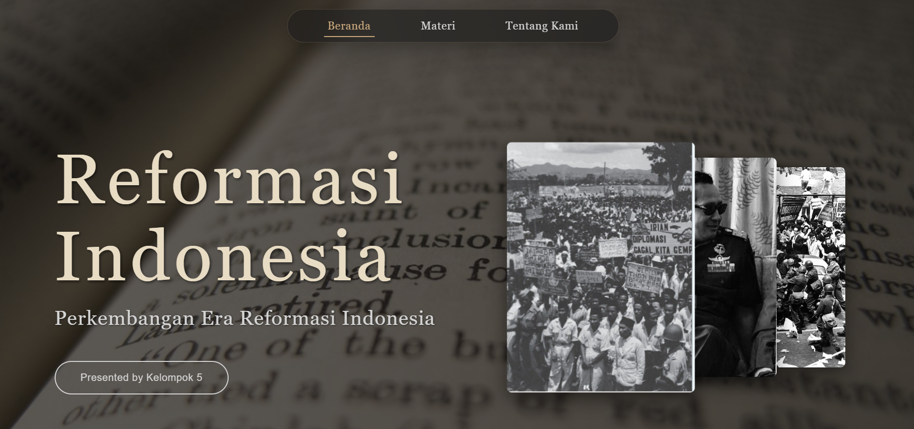
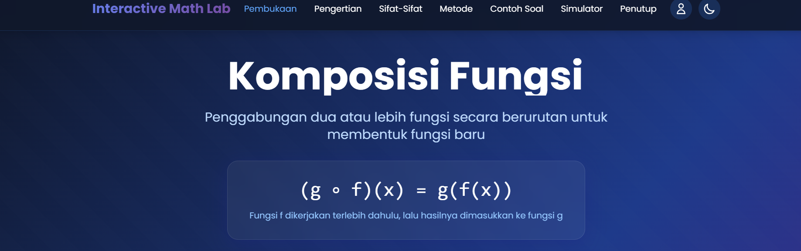

Desain Mug
Desain mug dengan konsep terinspirasi dari artis favorit, dikemas dengan gaya soft, lucu, dan aesthetic.

Website Kelompok
Website untuk mencatat progres game dan berbagi review dengan tampilan modern dan interaktif.
Lihat WebsiteMicrosite Shop
Toko digital sederhana berbasis microsite menggunakan platform S.id yang praktis dan mudah digunakan.
Kunjungi ShopKoleksi Poster Digital
Kumpulan desain poster dengan Adobe Illustrator, berbagai tema dan konsep visual yang menarik.
Lihat Koleksi
Cisco IT Essentials
Sertifikat Cisco IT Essentials yang menunjukkan pemahaman dasar tentang hardware komputer, sistem operasi, dan troubleshooting.
Lihat Sertifikat
Website Sejarah Reformasi Indonesia
Website edukatif tentang sejarah reformasi Indonesia dengan tampilan informatif dan mudah dipahami.
Lihat Website
Website Fungsi Komposisi
Website pembelajaran matematika tentang fungsi komposisi dengan interface yang interaktif dan user-friendly.
Lihat Website